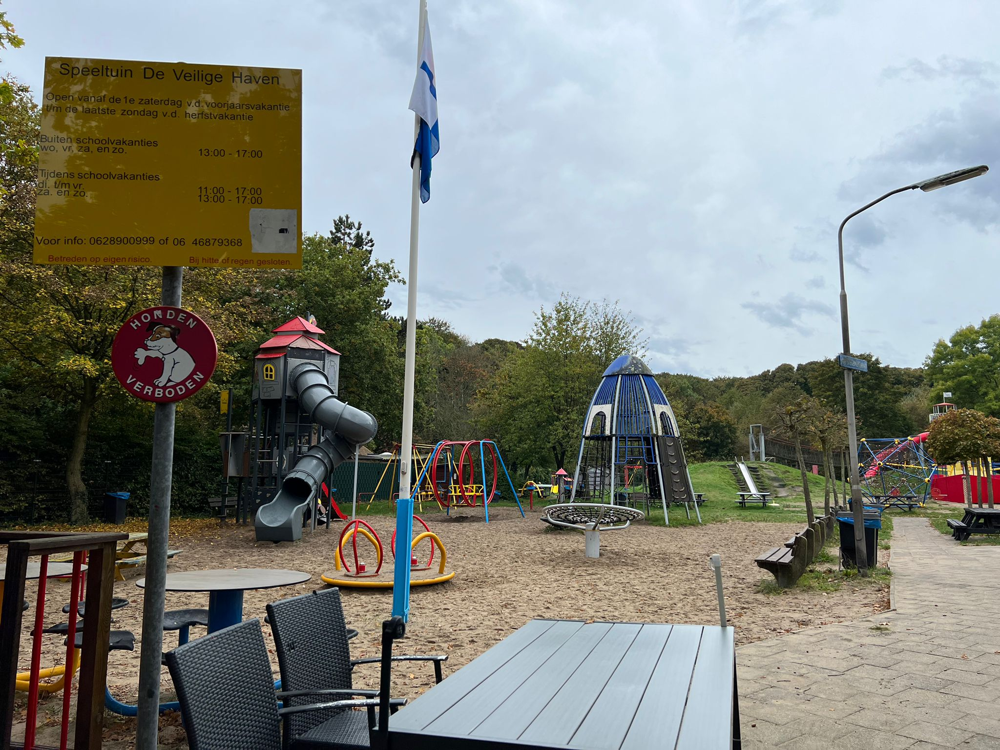
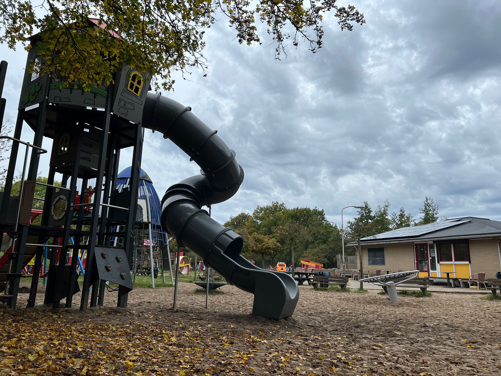
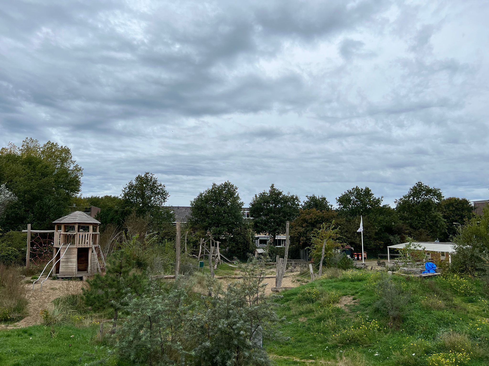

Activiteiten voor kleuters
De Veilige Haven
Wilt u even een lekker kopje koffie drinken op een terras en tegelijkertijd uw kinderen laten spelen in een veilige omgeving. Dan is de Veilige Haven in IJmuiden de perfecte plek. Er zijn veel verschillende speeltoestellen die u op de website van de Veilige Haven terug kunt vinden. De speeltuin is geopend vanaf de krokusvakantie t/m de herfstvakantie. Let op bij slecht weer of extreme hitte kan de speeltuin gesloten zijn. Als u behoefte heeft aan meer informatie: Link
- 
- 
Speeltuin Zeewijk
Een leuke speeltuin waar u ook heen kunt gaan en uw kinderen kunt laten genieten van de natuur is Speeltuin Zeewijk. Speeltuin Zeewijk heeft vooral leuke toestellen in de natuur waarop kinderen kunnen spelen. Ook heeft deze speeltuin een horecagedeelte met terras waar wat gedronken en gegeten kan worden. Daarnaast worden er soms ook activiteiten georganiseerd. De openingstijden kunt u vinden op de website van Speeltuin Zeewijk. Let op bij slecht weer, extreme hitte of tekort aan vrijwilligers kan het zijn dat de speeltuin niet open gaat. Als u behoefte heeft aan meer informatie: Link
